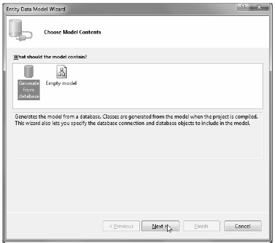
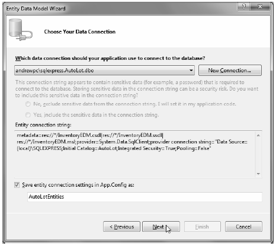
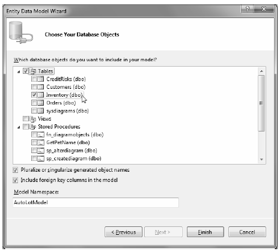
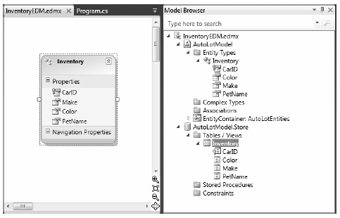
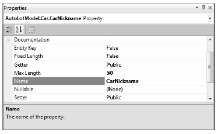
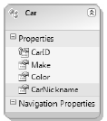
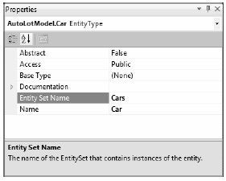
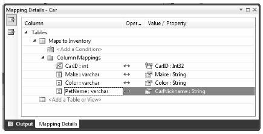
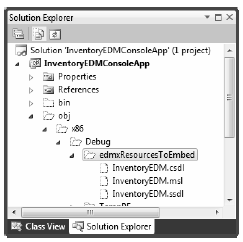

Now that you have a better understanding of what the ADO.NET Entity Framework is attempting to accomplish, as well as a high-level idea of how it all works, it’s time to look at your first full example. To keep things simple for now, you will build an EDM that only allow access to the Inventory table of AutoLot. Once you understand the basics, you will build a new EDM that accounts for the entire AutoLot database, and then display your data in a graphical user interface.
Begin by creating a new Console Application named InventoryEDMConsoleApp. When you wish to use the Entity Framework, your first step is to generate the necessary conceptual, logical, and physical model data defined by the *.edmx file. One way to do this is to use the .NET 4.0 SDK command line tool, EdmGen.exe. Open a Visual Studio 2010 Command Prompt and enter the following instruction:
EdmGen.exe -?
You should see a list of options that you can supply to the tool to generate the necessary files based on an existing database; you should also see options to generate a brand new database based on existing entity files! Table 23-3 documents some common options of EdmGen.exe.
Table 23-3. Common command-line flags of EdmGen.exe
| EdmGen.exe Option | Meaning in Life |
|---|---|
| /mode:FullGeneration | Generate the *.ssdl, *.msl, *.csdl files and client entities from a specified database. |
| /project: | This is the base name to be used for the generated code and files. Typically, this is the name of the database you pull data from (it can use the short form, /p:). |
| /connectionstring: | This is the connection string you use to interact with the database (it can use the short form, /c:). |
| /language: | Allows you to specify whether you wish to use C# or VB syntax for the generated code. |
| /pluralize | Automatically pluralize or singularize the entity set name, entity type name, and navigation property name using English language rules. |
As of .NET 4.0, the EF programming model supports domain first programming, which allows you to create your entities (with typical object-oriented techniques) and use them to generate a brand new database. In this introductory look at ADO.NET EF, you will not use this model-first mentality, nor will you use EdmGen.exe to generate your client-side entity model. Instead, you will use the graphical EDM designers of Visual Studio 2010.
Now activate the Project > Add New Item... menu option and insert a new ADO.NET Entity Data Model item (see Figure 23-7) named InventoryEDM.edmx.

Figure 23-7 Inserting a new ADO.NET EDM project item
Clicking the Add button launches the Entity Model Data Wizard. The wizard’s first step allows you to select whether you wish to generate an EDM from an existing database or define an empty model (for model-first development). Select the Generate from database option and click the Next button (see Figure 23-8).
Figure 23-8 Generating an EDM from an existing database
You can select your database in the wizard’s second step. If you already have a connection to a database within the Visual Studio 2010 Server Explorer, you will see it listed in the dropdown combo box. If this is not the case, you can click the New Connection button. Either way, pick your AutoLot database, and then make certain you save the connection string data in the (autogenerated) App.config file (Figure 23-9).
Figure 23-9 Selecting the database to generate the EDM from
Before you click the Next button, take a moment to examine the format of your connection string:
metadata=res://*/InventoryEDM.csdl|res://*/InventoryEDM.ssdl|res://*/InventoryEDM.msl;
provider=System.Data.SqlClient;provider connection string=
"Data Source=(local)\SQLEXPRESS;
Initial Catalog=AutoLot;Integrated Security=True;Pooling=False"
The point of interest here is the metadata flag, which you use to denote the names of the embedded XML resource data for your conceptual, physical, and mapping files (recall that the single *.edmx file will be broken into three separate files at compile time, and the data in these files takes the form of binary resources embedded in your assembly).
In the wizard’s final step, you can select the items from the database you wish to use to generate the EDM. Again, you are only concerned with the Inventory table in this example (Figure 23-10).
Figure 23-10
Now, click the Finish button to generate your EDM data.
Once you complete the wizard, you will see the EDM designer open within the IDE, where you should see a single entity named Inventory. You can view the composition of any entity on the designer using the Entity Data Model Browser window (you open this using the View < Other Windows menu option). Now look at the format of your conceptual model for the Inventory database table under the Entity Types folder (see Figure 23-11). You can see the physical model of the database under the Store node, where the name of your store will be based on the name of the database itself (AutoLotModel.Store, in this case).
Figure 23-11 The Entity designer and Model Browser window
By default, the names of your entities will be based on the original database object names; however, recall that the names of entities in your conceptual model can be anything you choose. You can change the entity name, as well as property names of the entity, by selecting an item on the designer and renaming it using the Name property in the Visual Studio 2010 Properties window. Next, rename the Inventory entity to Car and the PetName property to CarNickname (see Figure 23-12).
Figure 23-12 Reshaping entities using the Properties window
At this point, your conceptual model should look similar to what is shown in Figure 23-13.
Figure 23-13 The client side model, reshaped to match your business domain
Now select the entire Car entity on the designer and look at the Properties window again. You should see that the Entity Set Name field has also been renamed from Inventories to Cars (see Figure 23-14). The Entity Set value is important because this corresponds to the name of the property on the data context class, which you will use to modify the database. Recall that this property encapsulates an ObjectSet<T> member variable in the ObjectContext derived class.
Figure 23-14 The name of the ObjectSet<T> property wrapper
Before moving on, compile your application; doing so refreshes your code base and generates the *.csdl, *.msl, and *.ssdl files based on your *.edmx file data.
Now that you have reshaped the data, you can view the mappings between the conceptual layer and the physical layer using the Mapping Details window (you open this using the View > Other Windows... menu option). Next, look at Figure 23-15 and notice how the nodes on the left-hand side of the tree represent the data names in the physical layer, while the nodes on the right-hand side represent the names of your conceptual model.
Figure 23-15 The Mapping Details window shows the mappings of your conceptual and physical models
Now, let’s see exactly what the EDM Wizard generated for you. Right-click the InventoryEDM.edmx file in the Solution Explorer and select the Open With... menu option. From the resulting dialog box, pick the XML Editor option. This allows you to see the underlying XML data seen in the EDM designer. The structure of this XML document is broken down into four parts; you can find all of them in the <edmx:Edmx> root element.
The <edmx:Runtime> sub-elements define the XML data for your conceptual, physical, and mapping layer models. First, you have the definition of the physical Inventory database table:
<!-- SSDL content --> <edmx:StorageModels> <Schema Namespace="AutoLotModel.Store" Alias="Self" Provider="System.Data.SqlClient" ProviderManifestToken="2008" xmlns:store= "http://schemas.microsoft.com/ado/2007/12/edm/EntityStoreSchemaGenerator" xmlns="http://schemas.microsoft.com/ado/2009/02/edm/ssdl"> <EntityContainer Name="AutoLotModelStoreContainer"> <EntitySet Name="Inventory" EntityType="AutoLotModel.Store.Inventory" store:Type="Tables" Schema="dbo" /> </EntityContainer> <EntityType Name="Inventory"> <Key> <PropertyRef Name="CarID" /> </Key> <Property Name="CarID" Type="int" Nullable="false" /> <Property Name="Make" Type="varchar" Nullable="false" MaxLength="50" /> <Property Name="Color" Type="varchar" Nullable="false" MaxLength="50" /> <Property Name="PetName" Type="varchar" MaxLength="50" /> </EntityType> </Schema> </edmx:StorageModels>
Note that the <Schema> node defines the name of the ADO.NET data provider that will use this information when communicating with the database (System.Data.SqlClient). The <EntityType> node marks the name of the physical database table, as well as each column in the table.
The next major chunk of the *.edmx file is the <edmx:ConceptualModels> element, which defines the shaped client-side entities. Notice that the Cars entity defines the CarNickname property, which you change using the designer:
<!-- CSDL content --> <edmx:ConceptualModels> <Schema Namespace="AutoLotModel" Alias="Self" xmlns:annotation="http://schemas.microsoft.com/ado/2009/02/edm/annotation" xmlns="http://schemas.microsoft.com/ado/2008/09/edm"> <EntityContainer Name="AutoLotEntities" annotation:LazyLoadingEnabled="true"> <EntitySet Name="Cars" EntityType="AutoLotModel.Car" /> </EntityContainer> <EntityType Name="Car"> <Key> <PropertyRef Name="CarID" /> </Key> <Property Name="CarID" Type="Int32" Nullable="false" /> <Property Name="Make" Type="String" Nullable="false" MaxLength="50" Unicode="false" FixedLength="false" /> <Property Name="Color" Type="String" Nullable="false" MaxLength="50" Unicode="false" FixedLength="false" /> <Property Name="CarNickname" Type="String" MaxLength="50" Unicode="false" FixedLength="false" /> </EntityType> </Schema> </edmx:ConceptualModels>
That brings you to the mapping layer, which the Mapping Details window (and the EF runtime) uses to connect names in the conceptual model to the physical model:
<!-- C-S mapping content --> <edmx:Mappings> <Mapping Space="C-S" xmlns="http://schemas.microsoft.com/ado/2008/09/mapping/cs"> <EntityContainerMapping StorageEntityContainer="AutoLotModelStoreContainer" CdmEntityContainer="AutoLotEntities"> <EntitySetMapping Name="Cars"> <EntityTypeMapping TypeName="AutoLotModel.Car"> <MappingFragment StoreEntitySet="Inventory"> <ScalarProperty Name="CarID" ColumnName="CarID" /> <ScalarProperty Name="Make" ColumnName="Make" /> <ScalarProperty Name="Color" ColumnName="Color" /> <ScalarProperty Name="CarNickname" ColumnName="PetName" /> </MappingFragment></EntityTypeMapping> </EntitySetMapping> </EntityContainerMapping> </Mapping> </edmx:Mappings>
The last part of the *.edmx file is the <Designer> element, which is not used by the EF runtime. If you view this data, you will see it contains instructions used by Visual Studio to display your entities on the visual designer surface.
Again, ensure that you have compiled your project at least once and click the Show All Files button of the Solution Explorer. Next, begin by drilling into the obj\Debug folder; and then drill into the edmxResourcesToEmbed subdirectory. Here you will find three XML files that are based on the entirety of your *.edmx file (see Figure 23-16).
Figure 23-16 You use the *.edmx file to generate three seperate XML files
The data in these files will be embedded as binary resources in your assembly. Thus, your .NET application has all the information it needs to understand the conceptual, physical, and mapping layers of the EDM.
You are almost ready to author some code to use your EDM; before you do, however, you should check out the generated C# code base. Open the Class View window and expand your default namespace. You will see that, in addition to the Program class, the EDM Wizard generated an entity class (which you renamed to Car) and another class named AutoLotEntities.
If you go to the Solution Explorer and expand the InventoryEDM.edmx node, you will see an IDEmaintained file named InventoryEDM.Designer.cs. As with any IDE-maintained file, you should not directly edit this file because the IDE will recreate it each time you compile. However, you can open this file for viewing by double-clicking it.
The AutoLotEntities class extends the ObjectContext class, which (as you probably recall) is your entry point to the EF programming model. The constructors of AutoLotEntities provide various ways for you to feed in connection string data. The default constructor has been configured to read the connection string data automatically from the wizard-generated App.config file:
public partial class AutoLotEntities : ObjectContext { public AutoLotEntities() : base("name=AutoLotEntities", "AutoLotEntities") { this.ContextOptions.LazyLoadingEnabled = true; OnContextCreated(); } ... }
Next, notice that the Cars property of the AutoLotEntities class encapsulates the ObjectSet<Car> data member. You can use this property to work with the EDM model to modify the physical back-end database indirectly:
public partial class AutoLotEntities : ObjectContext { ... public ObjectSet<Car> Cars { get { if ((_Cars == null)) { _Cars = base.CreateObjectSet<Car>("Cars"); } return _Cars; } } private ObjectSet<Car> _Cars; }
Note You will also see various methods in your ObjectContext-derived classes that begin with AddTo. While you can use them to add new entities to the ObjectSet<T> member variables, the preferred way to do this is with the ObjectSet<T> member obtained from the strongly typed properties.
The last item of interest in the designer code file is the Car entity class. The bulk of the code for each entity class is a collection of properties that model the shape of your conceptual model. Each of these properties implement its set logic using a call to the static StructuralObject.SetValidValue() method of the EF API.
Also, the set logic includes code that informs the EF runtime that the state of an entity has changed, which is important because the ObjectContext must know about these changes to push updates to the physical database.
In addition, the set logic makes calls on two partial methods. Recall that a C# partial method provides a simple way to deal with change notifications in your applications. If you don’t implement a partial method, it is ignored by the compiler and stripped away. Here is the implementation of the CarNickname property of the Car entity class:
public partial class Car : EntityObject { ... public global::System.String CarNickname { get { return _CarNickname; } set { OnCarNicknameChanging(value); ReportPropertyChanging("CarNickname"); _CarNickname = StructuralObject.SetValidValue(value, true); ReportPropertyChanged("CarNickname"); OnCarNicknameChanged(); } } private global::System.String _CarNickname; partial void OnCarNicknameChanging(global::System.String value); partial void OnCarNicknameChanged(); }
All of the designer generated classes have been declared with the partial keyword, which as you recall allows you to implement a class across multiple C# code files. This is especially useful when working with the EF programming model because it means you can add “real” methods to your entity classes that help you model your business domain better.
In this example, you override the ToString() method of the Car entity class to return the state of the entity with a well formatted string. You also complete the definitions of the partial OnCarNicknameChanging() and OnCarNicknameChanged() methods to serve as simple diagnostic notifications. You define the following partial class declaration in a new Car.cs file:
public partial class Car { public override string ToString() { // Since the PetName column could be empty, supply // the default name of **No Name**. return string.Format("{0} is a {1} {2} with ID {3}.", this.CarNickname ?? "**No Name**", this.Color, this.Make, this.CarID); } partial void OnCarNicknameChanging(global::System.String value) { Console.WriteLine("\t-> Changing name to: {0}", value); } partial void OnCarNicknameChanged() { Console.WriteLine("\t-> Name of car has been changed!"); } }
A friendly reminder: When you provide implementations to these partial methods, you can receive notifications if the properties of the entity classes have changed or are being changed, but not when the physical database has changed. If you need to know when the physical database has changed, you can handle the SavingChanges event on your ObjectContext derived class.